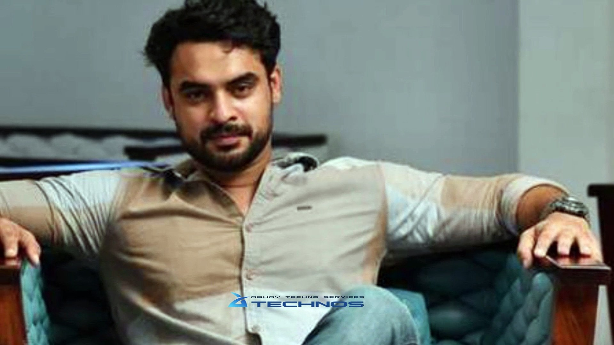

Tovino Thomas (born 21 January 1989) is an Indian actor and film producer who predominantly works in Malayalam films.[1] He made his debut in 2012 with the film Prabhuvinte Makkal. His breakthrough roles were in the films ABCD (2013), 7th Day (2014), Ennu Ninte Moideen (2015). He starred as the titular character in the Netflix superhero film Minnal Murali (2021).[2] He won the Filmfare Award for Best Supporting Actor[3] for his performance in Ennu Ninte Moideen (2015). He also won the Kerala Film Critics Association Award and the Filmfare Critics Award for Best Actor – Malayalam for his performance in Mayanadhi (2017). In 2022, Tovino won the SIIMA Award for Best Actor for Minnal Murali and Kala.